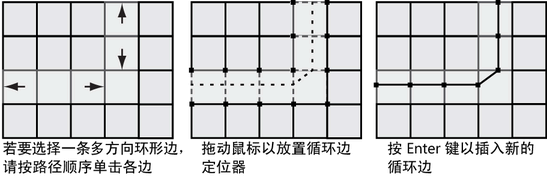
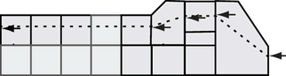

- 在场景视图中，选择多边形网格。
- 从“建模”(Modeling)菜单集中，选择“网格工具 > 插入循环边”(Mesh Tools > Insert Edge Loop) >
 。
。 此时将显示“插入循环边工具”(Insert Edge Loop Tool)设置编辑器。
- 设定以下选项：
- 保持位置(Maintain position)：与边的相对距离(Relative distance from edge)
- 自动完成(Auto Complete)：禁用 注： 当“自动完成”(Auto Complete)选项处于禁用状态时，您在选择多向的部分环形边时，不会在释放鼠标后自动插入循环边。
- 单击多边形网格的一条边，以指示您要在网格中插入新循环边的部分环形边的起点。
选中此边后，会在单击的边上显示一个绿色的顶点以指示所做的选择。
- 单击要作为部分环形边终点的第二条边。第二条边必须与所选的第一条边平行。
所有介于单击的第一条和第二条边之间的边都会成为选中的边，并且会显示由点组成的绿色循环边预览定位器（沿着选定边）。预览定位器指示要在网格中插入新循环边的位置。
- 若要沿着不同的方向延续现有的环形边路径，请单击与上次选定的边直接相邻的边，以指示选择的方向发生更改。
- 按照上述步骤 5 和 6 中所述继续选择边和/或更改环形边路径的方向。 注： 可以多次更改环形边选择路径的方向，但构造该路径时不应使其穿过已选择的区域。当选择路径自身发生相交时，该工具的边插入模式将无法确定要插入循环边的位置。在这些情况下，需要执行多个边分割操作。
- 如果要在选择过程中随时取消选择特定边，请按住 Ctrl 键并单击所需的边。如果要一次取消所有边的选择，请单击场景视图中远离网格的任意位置。
- 完成选择过程后，按下 Enter 键或单击鼠标右键，然后从标记菜单中选择“完成工具”(Complete Tool)。
此时，循环边即已插入到由多边形网格上的预览定位器指示的位置。新的循环边将一直保持选中状态，以便您可以对其执行其他操作。
- 完成循环边插入后，执行下列操作之一退出工具：
- 在“工具箱”(Toolbox)中选择“选择工具”(Select Tool)（热键：q）。
- 选择另一种工具或功能，对选定的环形边执行下一个操作。
例如，选择“移动工具”(Move Tool)来移动选定的循环边，选择来挤出选定的循环边，或将循环边选择转化为面。
注： 当“自动完成”(Auto Complete)选项处于禁用状态时，通过沿着所需路径按顺序单击任意给定面的两条边，还可以在不完全由四边多边形组成的多个面中插入部分循环边。这就指定了所选环形边路径的方向。